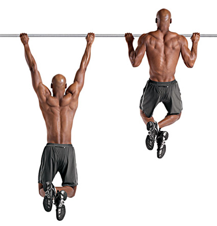
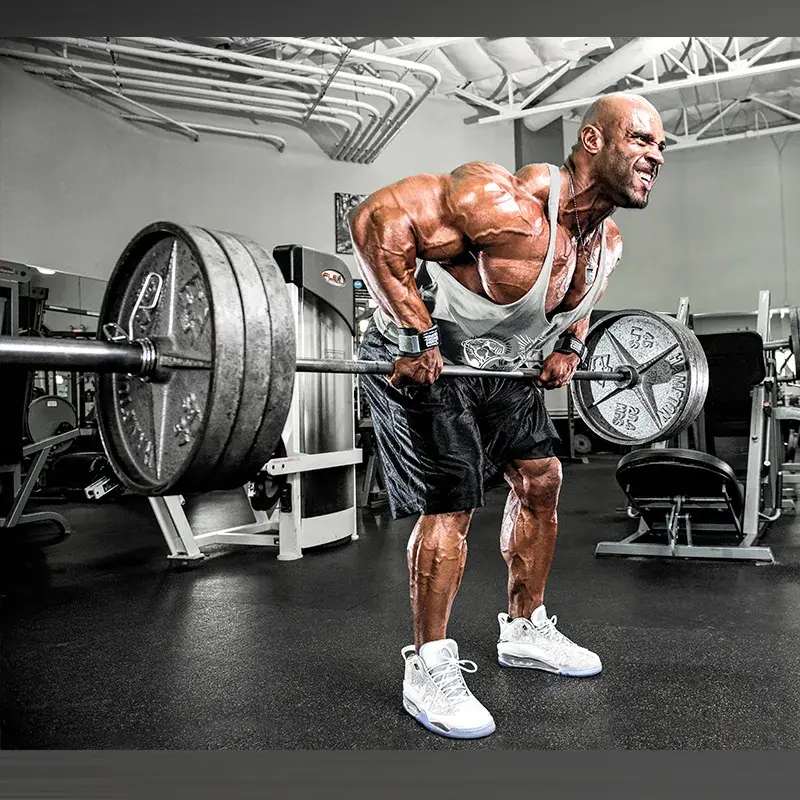
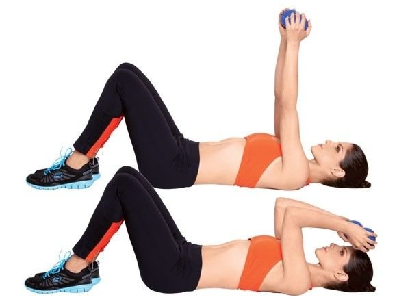
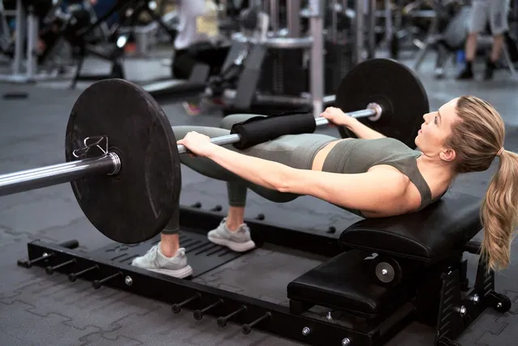
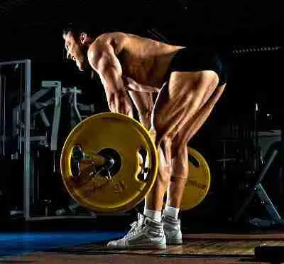

Parte Exterior das Costas
Os músculos da parte exterior das costas, como o latíssimo do dorso, são responsáveis por movimentos de adução, extensão e rotação interna do ombro, essenciais para puxar objetos para baixo e para trás.
Exercício: Barra fixa ativa o latíssimo do dorso, fortalecendo a capacidade de puxar o corpo para cima.
Parte Central das Costas
Os músculos da parte central das costas, como o trapézio e romboides, estabilizam e movimentam as escápulas, permitindo retração, elevação e depressão dos ombros.
Exercício: Remadas fortalecem os músculos da parte central das costas, melhorando a postura e a força de puxada.
Tríceps
Os tríceps são responsáveis pela extensão do cotovelo, fundamentais para empurrar objetos e realizar movimentos de arremesso.
Exercício: O tríceps testa isola o tríceps, promovendo o fortalecimento ao estender o antebraço.
Glúteos
Os glúteos, incluindo o glúteo máximo, médio e mínimo, são responsáveis pela extensão, abdução e rotação externa do quadril, essenciais para correr, saltar e manter a postura.
Exercício: Elevações de quadril ativam intensamente os glúteos, fortalecendo a extensão do quadril.
Posteriores da Coxa
Os músculos posteriores da coxa, como o bíceps femoral, realizam a flexão do joelho e a extensão do quadril, importantes para correr e saltar.
Exercício: O exercício stiff foca na extensão do quadril, alongando e fortalecendo os posteriores da coxa.
Panturrilha
Os músculos da panturrilha, como o gastrocnêmio e sóleo, são responsáveis pela flexão plantar do tornozelo, essenciais para caminhar, correr e saltar.

Exercício: Elevações de panturrilha fortalecem a flexão plantar, melhorando a estabilidade e o desempenho atlético.